from packaging.version import Version
import sklearn
assert Version(sklearn.__version__) >= Version("1.6.1")4 - Proyecto de ML
NotaAtribución
Este apunte es una traducción y leve adaptación de la notebook 02_end_to_end_machine_learning_project.ipynb del repositorio ageron/handson-mlp, de Aurélien Géron. El material original se distribuye bajo la licencia Apache License 2.0. Esta versión explicita que fue traducida y adaptada para este curso.
Requiere Scikit-Learn ≥ 1.6.1:
Obtener los datos
Su tarea es predecir el valor mediano de las viviendas en distritos de California a partir de varias características de esos distritos.
Descargar los datos
from pathlib import Path
import polars as pl
import tarfile
import urllib.request
def load_housing_data():
tarball_path = Path("datasets/housing.tgz")
if not tarball_path.is_file():
Path("datasets").mkdir(parents=True, exist_ok=True)
url = "https://github.com/ageron/data/raw/main/housing.tgz"
urllib.request.urlretrieve(url, tarball_path)
with tarfile.open(tarball_path) as housing_tarball:
housing_tarball.extractall(path="datasets", filter="data")
return pl.read_csv(Path("datasets/housing/housing.csv"))
housing_full = load_housing_data()Dar un vistazo rápido a la estructura de los datos
housing_full.head()
shape: (5, 10)
| longitude | latitude | housing_median_age | total_rooms | total_bedrooms | population | households | median_income | median_house_value | ocean_proximity |
|---|---|---|---|---|---|---|---|---|---|
| f64 | f64 | f64 | f64 | f64 | f64 | f64 | f64 | f64 | str |
| -122.23 | 37.88 | 41.0 | 880.0 | 129.0 | 322.0 | 126.0 | 8.3252 | 452600.0 | "NEAR BAY" |
| -122.22 | 37.86 | 21.0 | 7099.0 | 1106.0 | 2401.0 | 1138.0 | 8.3014 | 358500.0 | "NEAR BAY" |
| -122.24 | 37.85 | 52.0 | 1467.0 | 190.0 | 496.0 | 177.0 | 7.2574 | 352100.0 | "NEAR BAY" |
| -122.25 | 37.85 | 52.0 | 1274.0 | 235.0 | 558.0 | 219.0 | 5.6431 | 341300.0 | "NEAR BAY" |
| -122.25 | 37.85 | 52.0 | 1627.0 | 280.0 | 565.0 | 259.0 | 3.8462 | 342200.0 | "NEAR BAY" |
housing_full.glimpse()Rows: 20640
Columns: 10
$ longitude <f64> -122.23, -122.22, -122.24, -122.25, -122.25, -122.25, -122.25, -122.25, -122.26, -122.25
$ latitude <f64> 37.88, 37.86, 37.85, 37.85, 37.85, 37.85, 37.84, 37.84, 37.84, 37.84
$ housing_median_age <f64> 41.0, 21.0, 52.0, 52.0, 52.0, 52.0, 52.0, 52.0, 42.0, 52.0
$ total_rooms <f64> 880.0, 7099.0, 1467.0, 1274.0, 1627.0, 919.0, 2535.0, 3104.0, 2555.0, 3549.0
$ total_bedrooms <f64> 129.0, 1106.0, 190.0, 235.0, 280.0, 213.0, 489.0, 687.0, 665.0, 707.0
$ population <f64> 322.0, 2401.0, 496.0, 558.0, 565.0, 413.0, 1094.0, 1157.0, 1206.0, 1551.0
$ households <f64> 126.0, 1138.0, 177.0, 219.0, 259.0, 193.0, 514.0, 647.0, 595.0, 714.0
$ median_income <f64> 8.3252, 8.3014, 7.2574, 5.6431, 3.8462, 4.0368, 3.6591, 3.12, 2.0804, 3.6912
$ median_house_value <f64> 452600.0, 358500.0, 352100.0, 341300.0, 342200.0, 269700.0, 299200.0, 241400.0, 226700.0, 261100.0
$ ocean_proximity <str> 'NEAR BAY', 'NEAR BAY', 'NEAR BAY', 'NEAR BAY', 'NEAR BAY', 'NEAR BAY', 'NEAR BAY', 'NEAR BAY', 'NEAR BAY', 'NEAR BAY'
housing_full["ocean_proximity"].value_counts().sort("ocean_proximity")
shape: (5, 2)
| ocean_proximity | count |
|---|---|
| str | u32 |
| "<1H OCEAN" | 9136 |
| "INLAND" | 6551 |
| "ISLAND" | 5 |
| "NEAR BAY" | 2290 |
| "NEAR OCEAN" | 2658 |
housing_full.describe()
shape: (9, 11)
| statistic | longitude | latitude | housing_median_age | total_rooms | total_bedrooms | population | households | median_income | median_house_value | ocean_proximity |
|---|---|---|---|---|---|---|---|---|---|---|
| str | f64 | f64 | f64 | f64 | f64 | f64 | f64 | f64 | f64 | str |
| "count" | 20640.0 | 20640.0 | 20640.0 | 20640.0 | 20433.0 | 20640.0 | 20640.0 | 20640.0 | 20640.0 | "20640" |
| "null_count" | 0.0 | 0.0 | 0.0 | 0.0 | 207.0 | 0.0 | 0.0 | 0.0 | 0.0 | "0" |
| "mean" | -119.569704 | 35.631861 | 28.639486 | 2635.763081 | 537.870553 | 1425.476744 | 499.53968 | 3.870671 | 206855.816909 | null |
| "std" | 2.003532 | 2.135952 | 12.585558 | 2181.615252 | 421.38507 | 1132.462122 | 382.329753 | 1.899822 | 115395.615874 | null |
| "min" | -124.35 | 32.54 | 1.0 | 2.0 | 1.0 | 3.0 | 1.0 | 0.4999 | 14999.0 | "<1H OCEAN" |
| "25%" | -121.8 | 33.93 | 18.0 | 1448.0 | 296.0 | 787.0 | 280.0 | 2.5637 | 119600.0 | null |
| "50%" | -118.49 | 34.26 | 29.0 | 2127.0 | 435.0 | 1166.0 | 409.0 | 3.5349 | 179700.0 | null |
| "75%" | -118.01 | 37.71 | 37.0 | 3148.0 | 647.0 | 1725.0 | 605.0 | 4.7431 | 264700.0 | null |
| "max" | -114.31 | 41.95 | 52.0 | 39320.0 | 6445.0 | 35682.0 | 6082.0 | 15.0001 | 500001.0 | "NEAR OCEAN" |
import matplotlib.pyplot as plt
def to_numpy(values):
return values.to_numpy() if hasattr(values, "to_numpy") else values
def take_rows(data, indices):
return (
data.with_row_index("__row_idx")
.filter(pl.col("__row_idx").is_in(indices))
.drop("__row_idx")
)
def plot_scatter(
df,
x,
y,
*,
alpha=1.0,
s=None,
c=None,
cmap=None,
colorbar=False,
label=None,
figsize=(8, 6),
grid=True,
):
fig, ax = plt.subplots(figsize=figsize)
scatter = ax.scatter(
to_numpy(df[x]),
to_numpy(df[y]),
alpha=alpha,
s=to_numpy(s) if s is not None else None,
c=to_numpy(c) if c is not None else None,
cmap=cmap,
label=label,
)
ax.set_xlabel(x)
ax.set_ylabel(y)
ax.grid(grid)
if colorbar:
plt.colorbar(scatter, ax=ax)
if label is not None:
ax.legend()
return ax
def plot_scatter_matrix(df, columns, figsize=(12, 8)):
n = len(columns)
fig, axs = plt.subplots(n, n, figsize=figsize)
for i, y_col in enumerate(columns):
y = df[y_col].drop_nulls().to_numpy()
for j, x_col in enumerate(columns):
ax = axs[i, j]
x = df[x_col].drop_nulls().to_numpy()
if i == j:
ax.hist(x, bins=30, color="0.7")
else:
ax.scatter(df[x_col].to_numpy(), df[y_col].to_numpy(), s=5, alpha=0.2)
if i == n - 1:
ax.set_xlabel(x_col)
else:
ax.set_xticklabels([])
if j == 0:
ax.set_ylabel(y_col)
else:
ax.set_yticklabels([])
plt.tight_layout()
numeric_columns = housing_full.select(pl.selectors.numeric()).columns
fig, axs = plt.subplots(3, 3, figsize=(12, 8))
for ax, column in zip(axs.flat, numeric_columns):
ax.hist(housing_full[column].drop_nulls().to_numpy(), bins=50)
ax.set_title(column)
for ax in axs.flat[len(numeric_columns) :]:
ax.remove()
plt.tight_layout();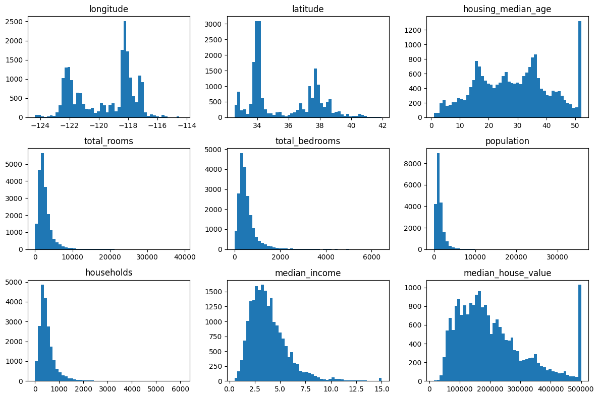
Crear un conjunto de prueba
import numpy as np
def shuffle_and_split_data(data, test_ratio, rng):
shuffled_indices = rng.permutation(len(data))
test_set_size = int(len(data) * test_ratio)
test_indices = shuffled_indices[:test_set_size]
train_indices = shuffled_indices[test_set_size:]
return take_rows(data, train_indices), take_rows(data, test_indices)Para garantizar que las salidas de este notebook sean las mismas cada vez que lo ejecutamos, debemos fijar la semilla aleatoria:
rng = np.random.default_rng(seed=42)
train_set, test_set = shuffle_and_split_data(housing_full, 0.2, rng)
len(train_set)16512len(test_set)4128Lamentablemente, esto no garantiza que este notebook produzca exactamente los mismos resultados que en el libro, ya que existen otras posibles fuentes de variación. La más importante es que los algoritmos se ajustan con el tiempo a medida que evolucionan las bibliotecas. Así que tolere algunas diferencias menores: idealmente, la mayoría de las salidas deberían ser iguales o, al menos, estar en el rango esperado.
Nota: otra fuente de aleatoriedad es el orden de los set de Python. Depende de la función hash(), que recibe una “sal” aleatoria cuando Python arranca (esto comenzó en Python 3.3 para prevenir ciertos ataques de denegación de servicio). Para eliminar esta aleatoriedad, la solución es configurar la variable de entorno PYTHONHASHSEED en "0" antes de que Python se inicie. Si lo hace después, no ocurrirá nada. Por suerte, si está ejecutando este notebook en Colab, esa variable ya viene configurada.
from zlib import crc32
def is_id_in_test_set(identifier, test_ratio):
return crc32(np.int64(identifier)) < test_ratio * 2**32
def split_data_with_id_hash(data, test_ratio, id_column):
in_test_set = pl.Series(
"in_test_set",
[is_id_in_test_set(id_, test_ratio) for id_ in data[id_column].to_list()],
)
return data.filter(~in_test_set), data.filter(in_test_set)housing_with_id = housing_full.with_row_index("index") # agrega una columna `index`
train_set, test_set = split_data_with_id_hash(housing_with_id, 0.2, "index")housing_with_id = housing_with_id.with_columns(
(pl.col("longitude") * 1000 + pl.col("latitude")).alias("id")
)
train_set, test_set = split_data_with_id_hash(housing_with_id, 0.2, "id")from sklearn.model_selection import train_test_split
def sklearn_split_polars(data, *, test_size, random_state, stratify=None):
indices = np.arange(len(data))
stratify_values = None if stratify is None else data[stratify].to_numpy()
train_indices, test_indices = train_test_split(
indices,
test_size=test_size,
random_state=random_state,
stratify=stratify_values,
)
return take_rows(data, train_indices), take_rows(data, test_indices)
train_set, test_set = sklearn_split_polars(
housing_full, test_size=0.2, random_state=42
)test_set["total_bedrooms"].is_null().sum()44housing_full = housing_full.with_columns(
pl.when(pl.col("median_income") < 1.5)
.then(1)
.when(pl.col("median_income") < 3.0)
.then(2)
.when(pl.col("median_income") < 4.5)
.then(3)
.when(pl.col("median_income") < 6.0)
.then(4)
.otherwise(5)
.alias("income_cat")
)cat_counts = housing_full.group_by("income_cat").len().sort("income_cat")
plt.bar(cat_counts["income_cat"].to_list(), cat_counts["len"].to_list())
plt.xlabel("Categoría de ingresos")
plt.ylabel("Cantidad de distritos");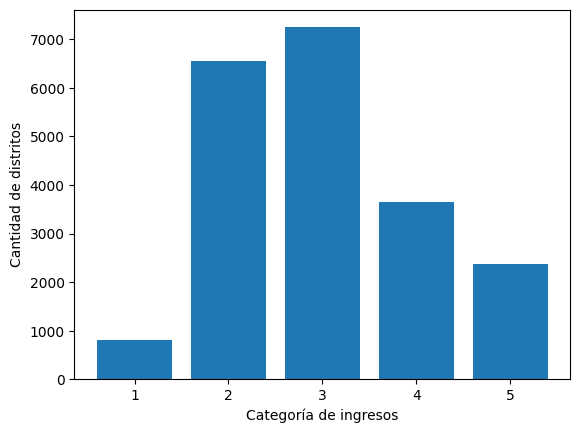
from sklearn.model_selection import StratifiedShuffleSplit
splitter = StratifiedShuffleSplit(n_splits=10, test_size=0.2, random_state=42)
strat_splits = []
for train_index, test_index in splitter.split(
np.zeros(len(housing_full)), housing_full["income_cat"].to_numpy()
):
strat_train_set_n = take_rows(housing_full, train_index)
strat_test_set_n = take_rows(housing_full, test_index)
strat_splits.append([strat_train_set_n, strat_test_set_n])strat_train_set, strat_test_set = strat_splits[0]Es mucho más corto obtener una única partición estratificada:
strat_train_set, strat_test_set = sklearn_split_polars(
housing_full, test_size=0.2, random_state=42, stratify="income_cat"
)(
strat_test_set.group_by("income_cat")
.len()
.sort("income_cat")
.with_columns((pl.col("len") / len(strat_test_set)).alias("proportion"))
.select("income_cat", "proportion")
)
shape: (5, 2)
| income_cat | proportion |
|---|---|
| i32 | f64 |
| 1 | 0.039486 |
| 2 | 0.317345 |
| 3 | 0.35126 |
| 4 | 0.176841 |
| 5 | 0.115068 |
strat_train_set = strat_train_set.drop("income_cat")
strat_test_set = strat_test_set.drop("income_cat")Explorar y visualizar los datos para obtener insights
housing = strat_train_set.clone()Visualización de datos geográficos
plot_scatter(housing, "longitude", "latitude", grid=True);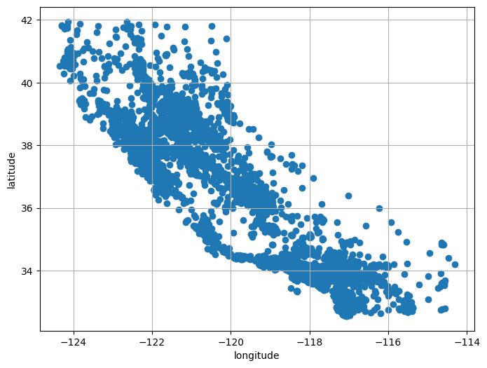
plot_scatter(housing, "longitude", "latitude", grid=True, alpha=0.2);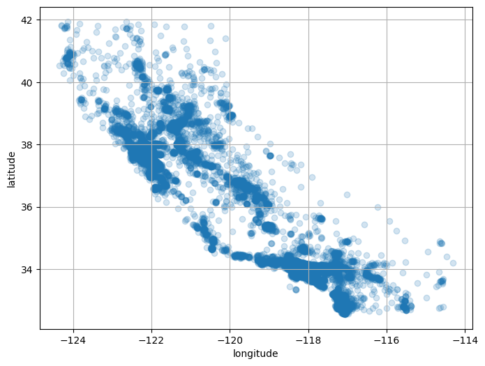
plot_scatter(
housing,
"longitude",
"latitude",
grid=True,
s=housing["population"] / 100,
label="población",
c=housing["median_house_value"],
cmap="jet",
colorbar=True,
figsize=(10, 7),
);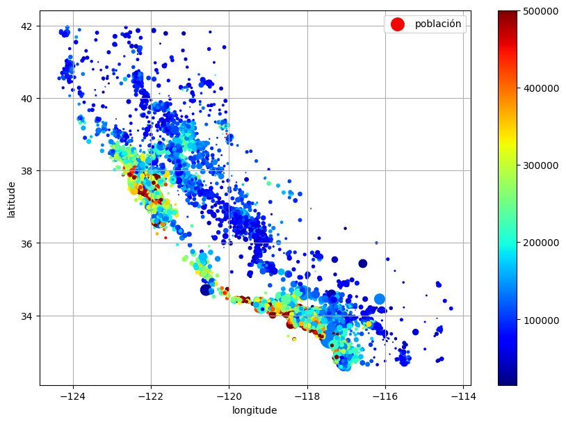
La siguiente celda genera la primera figura del capítulo (este código no está en el libro). Es simplemente una versión mejorada de la figura anterior, con una imagen de California agregada al fondo, etiquetas más agradables y sin grilla.
# Descargar la imagen de California
filename = "california.png"
filepath = Path(f"my_{filename}")
if not filepath.is_file():
homlp_root = "https://github.com/ageron/handson-mlp/raw/main/"
url = homlp_root + "images/end_to_end_project/" + filename
print("Descargando", filename)
urllib.request.urlretrieve(url, filepath)
housing_renamed = housing.rename(
{
"latitude": "Latitud",
"longitude": "Longitud",
"population": "Población",
"median_house_value": "Valor mediano de la vivienda (USD)",
}
)
plot_scatter(
housing_renamed,
"Longitud",
"Latitud",
s=housing_renamed["Población"] / 100,
label="Población",
c=housing_renamed["Valor mediano de la vivienda (USD)"],
cmap="jet",
colorbar=True,
figsize=(10, 7),
grid=False,
)
california_img = plt.imread(filepath)
axis = -124.55, -113.95, 32.45, 42.05
plt.axis(axis)
plt.imshow(california_img, extent=axis);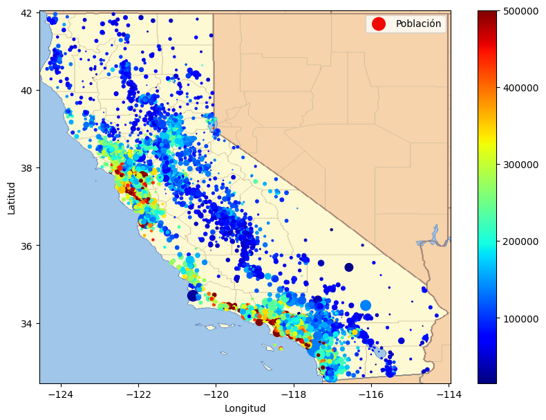
Buscar correlaciones
corr_matrix = housing.select(pl.selectors.numeric()).corr()pl.DataFrame(
{
"atributo": corr_matrix.columns,
"median_house_value": corr_matrix["median_house_value"],
}
).sort("median_house_value", descending=True)
shape: (9, 2)
| atributo | median_house_value |
|---|---|
| str | f64 |
| "total_bedrooms" | NaN |
| "median_house_value" | 1.0 |
| "median_income" | 0.687369 |
| "total_rooms" | 0.132973 |
| "housing_median_age" | 0.107244 |
| "households" | 0.066395 |
| "population" | -0.025966 |
| "longitude" | -0.049937 |
| "latitude" | -0.14229 |
attributes = [
"median_house_value",
"median_income",
"total_rooms",
"housing_median_age",
]
plot_scatter_matrix(housing, attributes, figsize=(12, 8));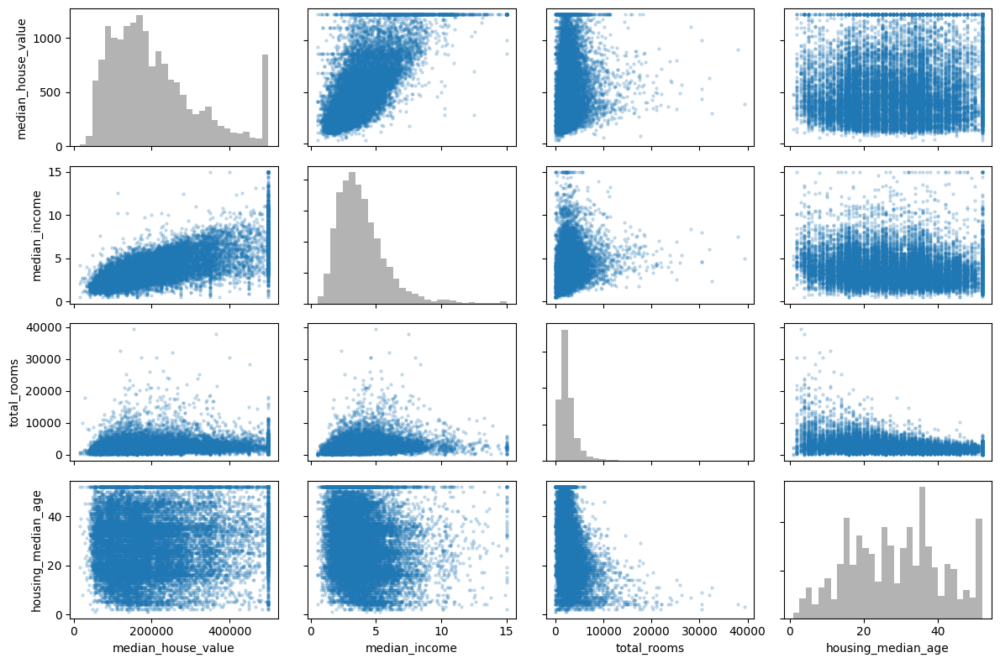
plot_scatter(
housing,
"median_income",
"median_house_value",
alpha=0.1,
grid=True,
);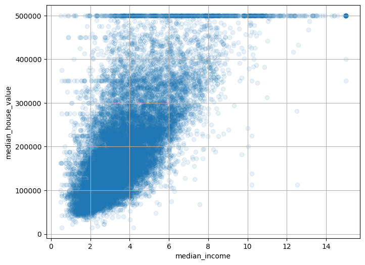
Experimentar con combinaciones de atributos
housing = housing.with_columns(
(pl.col("total_rooms") / pl.col("households")).alias("rooms_per_house"),
(pl.col("total_bedrooms") / pl.col("total_rooms")).alias("bedrooms_ratio"),
(pl.col("population") / pl.col("households")).alias("people_per_house"),
)corr_matrix = housing.select(pl.selectors.numeric()).corr()
pl.DataFrame(
{
"atributo": corr_matrix.columns,
"median_house_value": corr_matrix["median_house_value"],
}
).sort("median_house_value", descending=True)
shape: (12, 2)
| atributo | median_house_value |
|---|---|
| str | f64 |
| "total_bedrooms" | NaN |
| "bedrooms_ratio" | NaN |
| "median_house_value" | 1.0 |
| "median_income" | 0.687369 |
| "rooms_per_house" | 0.151071 |
| … | … |
| "households" | 0.066395 |
| "people_per_house" | -0.022334 |
| "population" | -0.025966 |
| "longitude" | -0.049937 |
| "latitude" | -0.14229 |
Preparar los datos para algoritmos de Machine Learning
Volvamos al conjunto de entrenamiento original y separemos la variable objetivo (observe que strat_train_set.drop() crea una copia de strat_train_set sin la columna; no modifica realmente strat_train_set, a menos que pase inplace=True):
housing = strat_train_set.drop("median_house_value")
housing_labels = strat_train_set["median_house_value"].clone()Nota: la celda anterior reinicia el dataframe housing, eliminando también los atributos personalizados que acabamos de agregar. Hacemos esto porque, más adelante en el capítulo, construiremos un transformation pipeline automatizado para manejar todos estos pasos de una sola vez.
Limpieza de datos
En el libro se enumeran 3 opciones para manejar los valores NaN:
housing = housing.drop_nulls(subset=["total_bedrooms"]) # opción 1
housing = housing.drop("total_bedrooms") # opción 2
median = housing["total_bedrooms"].median() # opción 3
housing = housing.with_columns(pl.col("total_bedrooms").fill_null(median))Para cada opción, crearemos una copia de housing y trabajaremos sobre esa copia para evitar romper housing.
housing_with_row_id = housing.with_row_index("row_id")
null_rows = housing_with_row_id.filter(
pl.any_horizontal(pl.all().exclude("row_id").is_null())
)
null_row_ids = null_rows["row_id"]
null_rows.head()
shape: (5, 10)
| row_id | longitude | latitude | housing_median_age | total_rooms | total_bedrooms | population | households | median_income | ocean_proximity |
|---|---|---|---|---|---|---|---|---|---|
| u32 | f64 | f64 | f64 | f64 | f64 | f64 | f64 | f64 | str |
| 146 | -118.27 | 34.04 | 13.0 | 1784.0 | null | 2158.0 | 682.0 | 1.7038 | "<1H OCEAN" |
| 263 | -117.65 | 34.04 | 15.0 | 3393.0 | null | 2039.0 | 611.0 | 3.9336 | "INLAND" |
| 294 | -122.5 | 37.75 | 44.0 | 1819.0 | null | 1137.0 | 354.0 | 3.4919 | "NEAR OCEAN" |
| 402 | -114.59 | 34.83 | 41.0 | 812.0 | null | 375.0 | 158.0 | 1.7083 | "INLAND" |
| 411 | -118.08 | 33.92 | 38.0 | 1335.0 | null | 1011.0 | 269.0 | 3.6908 | "<1H OCEAN" |
from sklearn.impute import SimpleImputer
imputer = SimpleImputer(strategy="median")Separamos los atributos numéricos para usar la estrategia "median" (ya que no puede calcularse sobre atributos de texto como ocean_proximity):
housing_num = housing.select(pl.selectors.numeric())imputer.fit(housing_num)SimpleImputer(strategy='median')In a Jupyter environment, please rerun this cell to show the HTML representation or trust the notebook.
On GitHub, the HTML representation is unable to render, please try loading this page with nbviewer.org.
Parameters
imputer.statistics_array([-118.5 , 34.26 , 29. , 2126.5 , 435. , 1167. ,
410. , 3.5394])Verifiquemos que esto sea lo mismo que calcular manualmente la mediana de cada atributo:
housing_num.median().to_numpy().ravel()array([-118.5 , 34.26 , 29. , 2126.5 , 435. , 1167. ,
410. , 3.5394])Transformar el conjunto de entrenamiento:
X = imputer.transform(housing_num)imputer.feature_names_in_array(['longitude', 'latitude', 'housing_median_age', 'total_rooms',
'total_bedrooms', 'population', 'households', 'median_income'],
dtype=object)housing_tr = pl.DataFrame(X, schema=housing_num.columns)(
housing_tr.with_row_index("row_id")
.filter(pl.col("row_id").is_in(null_row_ids.to_list()))
.drop("row_id")
.head()
)
shape: (5, 8)
| longitude | latitude | housing_median_age | total_rooms | total_bedrooms | population | households | median_income |
|---|---|---|---|---|---|---|---|
| f64 | f64 | f64 | f64 | f64 | f64 | f64 | f64 |
| -118.27 | 34.04 | 13.0 | 1784.0 | 435.0 | 2158.0 | 682.0 | 1.7038 |
| -117.65 | 34.04 | 15.0 | 3393.0 | 435.0 | 2039.0 | 611.0 | 3.9336 |
| -122.5 | 37.75 | 44.0 | 1819.0 | 435.0 | 1137.0 | 354.0 | 3.4919 |
| -114.59 | 34.83 | 41.0 | 812.0 | 435.0 | 375.0 | 158.0 | 1.7083 |
| -118.08 | 33.92 | 38.0 | 1335.0 | 435.0 | 1011.0 | 269.0 | 3.6908 |
imputer.strategy'median'Ahora descartemos algunos outliers:
from sklearn.ensemble import IsolationForest
isolation_forest = IsolationForest(random_state=42)
outlier_pred = isolation_forest.fit_predict(X)outlier_predarray([-1, -1, 1, ..., 1, 1, 1], shape=(16512,))Si quisiera eliminar outliers, ejecutaría el siguiente código:
# housing = housing.filter(pl.Series("is_inlier", outlier_pred == 1))
# housing_labels = housing_labels.filter(pl.Series("is_inlier", outlier_pred == 1))Manejo de atributos de texto y categóricos
Ahora preprocesemos la variable de entrada categórica ocean_proximity:
housing_cat = housing.select("ocean_proximity")
housing_cat.head(8)
shape: (8, 1)
| ocean_proximity |
|---|
| str |
| "NEAR BAY" |
| "NEAR BAY" |
| "NEAR BAY" |
| "NEAR BAY" |
| "NEAR BAY" |
| "NEAR BAY" |
| "NEAR BAY" |
| "NEAR BAY" |
from sklearn.preprocessing import OrdinalEncoder
ordinal_encoder = OrdinalEncoder()
housing_cat_encoded = ordinal_encoder.fit_transform(housing_cat)housing_cat_encoded[:8]array([[3.],
[3.],
[3.],
[3.],
[3.],
[3.],
[3.],
[3.]])ordinal_encoder.categories_[array(['<1H OCEAN', 'INLAND', 'ISLAND', 'NEAR BAY', 'NEAR OCEAN'],
dtype=object)]from sklearn.preprocessing import OneHotEncoder
cat_encoder = OneHotEncoder()
housing_cat_1hot = cat_encoder.fit_transform(housing_cat)housing_cat_1hot<Compressed Sparse Row sparse matrix of dtype 'float64'
with 16512 stored elements and shape (16512, 5)>Por defecto, la clase OneHotEncoder devuelve un arreglo disperso (sparse), pero podemos convertirlo en un arreglo denso si hace falta llamando al método toarray():
housing_cat_1hot.toarray()array([[0., 0., 0., 1., 0.],
[0., 0., 0., 1., 0.],
[0., 0., 0., 1., 0.],
...,
[0., 1., 0., 0., 0.],
[0., 1., 0., 0., 0.],
[0., 1., 0., 0., 0.]], shape=(16512, 5))Como alternativa, puede establecer sparse_output=False al crear el OneHotEncoder (nota: el hiperparámetro sparse pasó a llamarse sparse_output en Scikit-Learn 1.2):
cat_encoder = OneHotEncoder(sparse_output=False)
housing_cat_1hot = cat_encoder.fit_transform(housing_cat)
housing_cat_1hotarray([[0., 0., 0., 1., 0.],
[0., 0., 0., 1., 0.],
[0., 0., 0., 1., 0.],
...,
[0., 1., 0., 0., 0.],
[0., 1., 0., 0., 0.],
[0., 1., 0., 0., 0.]], shape=(16512, 5))cat_encoder.categories_[array(['<1H OCEAN', 'INLAND', 'ISLAND', 'NEAR BAY', 'NEAR OCEAN'],
dtype=object)]df_test = pl.DataFrame({"ocean_proximity": ["INLAND", "NEAR BAY"]})
df_test.to_dummies()
shape: (2, 2)
| ocean_proximity_INLAND | ocean_proximity_NEAR BAY |
|---|---|
| u8 | u8 |
| 1 | 0 |
| 0 | 1 |
cat_encoder.transform(df_test)array([[0., 1., 0., 0., 0.],
[0., 0., 0., 1., 0.]])df_test_unknown = pl.DataFrame({"ocean_proximity": ["<2H OCEAN", "ISLAND"]})
df_test_unknown.to_dummies()
shape: (2, 2)
| ocean_proximity_<2H OCEAN | ocean_proximity_ISLAND |
|---|---|
| u8 | u8 |
| 1 | 0 |
| 0 | 1 |
cat_encoder.handle_unknown = "ignore"
cat_encoder.transform(df_test_unknown)array([[0., 0., 0., 0., 0.],
[0., 0., 1., 0., 0.]])cat_encoder.feature_names_in_array(['ocean_proximity'], dtype=object)cat_encoder.get_feature_names_out()array(['ocean_proximity_<1H OCEAN', 'ocean_proximity_INLAND',
'ocean_proximity_ISLAND', 'ocean_proximity_NEAR BAY',
'ocean_proximity_NEAR OCEAN'], dtype=object)cat_encoder.transform(df_test_unknown)array([[0., 0., 0., 0., 0.],
[0., 0., 1., 0., 0.]])df_output = pl.DataFrame(
cat_encoder.transform(df_test_unknown),
schema=list(cat_encoder.get_feature_names_out()),
)df_output
shape: (2, 5)
| ocean_proximity_<1H OCEAN | ocean_proximity_INLAND | ocean_proximity_ISLAND | ocean_proximity_NEAR BAY | ocean_proximity_NEAR OCEAN |
|---|---|---|---|---|
| f64 | f64 | f64 | f64 | f64 |
| 0.0 | 0.0 | 0.0 | 0.0 | 0.0 |
| 0.0 | 0.0 | 1.0 | 0.0 | 0.0 |
Escalado de atributos
from sklearn.preprocessing import MinMaxScaler
min_max_scaler = MinMaxScaler(feature_range=(-1, 1))
housing_num_min_max_scaled = min_max_scaler.fit_transform(housing_num)from sklearn.preprocessing import StandardScaler
std_scaler = StandardScaler()
housing_num_std_scaled = std_scaler.fit_transform(housing_num)# código extra – esta celda genera la Figura 2–17
fig, axs = plt.subplots(1, 2, figsize=(8, 3), sharey=True)
axs[0].hist(housing["population"].drop_nulls().to_numpy(), bins=50)
axs[1].hist(np.log(housing["population"].drop_nulls().to_numpy()), bins=50)
axs[0].set_xlabel("Población")
axs[1].set_xlabel("Logaritmo de la población")
axs[0].set_ylabel("Cantidad de distritos");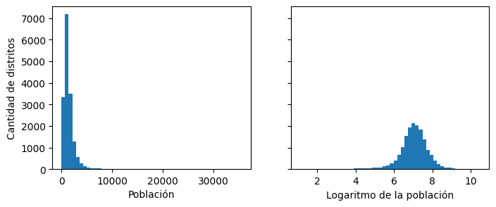
from sklearn.metrics.pairwise import rbf_kernel
age_simil_35 = rbf_kernel(
housing.select("housing_median_age").to_numpy(), [[35]], gamma=0.1
)# código extra – esta celda genera la Figura 2–18
ages = np.linspace(
housing["housing_median_age"].min(), housing["housing_median_age"].max(), 500
).reshape(-1, 1)
gamma1 = 0.1
gamma2 = 0.03
rbf1 = rbf_kernel(ages, [[35]], gamma=gamma1)
rbf2 = rbf_kernel(ages, [[35]], gamma=gamma2)
fig, ax1 = plt.subplots()
ax1.set_xlabel("Antigüedad mediana de las viviendas")
ax1.set_ylabel("Cantidad de distritos")
ax1.hist(housing["housing_median_age"].drop_nulls().to_numpy(), bins=50)
ax2 = ax1.twinx() # crear un eje gemelo que comparta el mismo eje x
color = "blue"
ax2.plot(ages, rbf1, color=color, label="gamma = 0.10")
ax2.plot(ages, rbf2, color=color, label="gamma = 0.03", linestyle="--")
ax2.tick_params(axis="y", labelcolor=color)
ax2.set_ylabel("Similitud de antigüedad", color=color)
plt.legend(loc="upper left")
plt.show()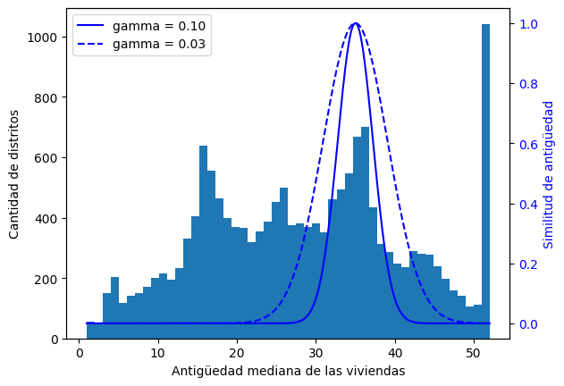
from sklearn.linear_model import LinearRegression
target_scaler = StandardScaler()
scaled_labels = target_scaler.fit_transform(housing_labels.to_frame().to_numpy())
model = LinearRegression()
model.fit(housing.select("median_income").to_numpy(), scaled_labels)
some_new_data = housing.select("median_income").head(5) # supongamos que estos son datos nuevos
scaled_predictions = model.predict(some_new_data.to_numpy())
predictions = target_scaler.inverse_transform(scaled_predictions)predictionsarray([[393767.28579276],
[392768.19727172],
[348942.63357583],
[281176.72603341],
[205745.54269514]])from sklearn.compose import TransformedTargetRegressor
model = TransformedTargetRegressor(LinearRegression(), transformer=StandardScaler())
model.fit(housing.select("median_income").to_numpy(), housing_labels.to_numpy())
predictions = model.predict(some_new_data.to_numpy())predictionsarray([393767.28579276, 392768.19727172, 348942.63357583, 281176.72603341,
205745.54269514])Transformadores personalizados
Para crear transformadores simples:
from sklearn.preprocessing import FunctionTransformer
log_transformer = FunctionTransformer(np.log, inverse_func=np.exp)
log_pop = log_transformer.transform(housing.select("population").to_numpy())rbf_transformer = FunctionTransformer(rbf_kernel, kw_args=dict(Y=[[35.0]], gamma=0.1))
age_simil_35 = rbf_transformer.transform(housing.select("housing_median_age").to_numpy())age_simil_35array([[2.73237224e-02],
[3.07487988e-09],
[2.81118530e-13],
...,
[2.81118530e-13],
[2.81118530e-13],
[2.09879105e-16]], shape=(16512, 1))sf_coords = 37.7749, -122.41
sf_transformer = FunctionTransformer(rbf_kernel, kw_args=dict(Y=[sf_coords], gamma=0.1))
sf_simil = sf_transformer.transform(
housing.select("latitude", "longitude").to_numpy()
)sf_similarray([[0.99566482],
[0.99567518],
[0.99655196],
...,
[0.6452246 ],
[0.6752005 ],
[0.67616077]], shape=(16512, 1))ratio_transformer = FunctionTransformer(lambda X: X[:, [0]] / X[:, [1]])
ratio_transformer.transform(np.array([[1.0, 2.0], [3.0, 4.0]]))array([[0.5 ],
[0.75]])from sklearn.base import BaseEstimator, TransformerMixin
from sklearn.utils.validation import check_array, check_is_fitted
class StandardScalerClone(BaseEstimator, TransformerMixin):
def __init__(self, with_mean=True): # sin *args ni **kwargs
self.with_mean = with_mean
def fit(self, X, y=None): # y es obligatorio aunque no lo usemos
X = check_array(X) # verifica que X sea un arreglo con valores float finitos
self.mean_ = X.mean(axis=0)
self.scale_ = X.std(axis=0)
self.n_features_in_ = X.shape[1] # todo estimador guarda esto en fit()
return self # siempre devolver self
def transform(self, X):
check_is_fitted(self) # busca atributos aprendidos (terminados en _)
X = check_array(X)
assert self.n_features_in_ == X.shape[1]
if self.with_mean:
X = X - self.mean_
return X / self.scale_from sklearn.cluster import KMeans
class ClusterSimilarity(BaseEstimator, TransformerMixin):
def __init__(self, n_clusters=10, gamma=1.0, random_state=None):
self.n_clusters = n_clusters
self.gamma = gamma
self.random_state = random_state
def fit(self, X, y=None, sample_weight=None):
self.kmeans_ = KMeans(self.n_clusters, random_state=self.random_state)
self.kmeans_.fit(X, sample_weight=sample_weight)
return self # siempre devolver self
def transform(self, X):
return rbf_kernel(X, self.kmeans_.cluster_centers_, gamma=self.gamma)
def get_feature_names_out(self, names=None):
return [f"Similitud con cluster {i}" for i in range(self.n_clusters)]Agrupemos los distritos basándonos solo en la latitud y la longitud:
cluster_simil = ClusterSimilarity(n_clusters=10, gamma=1.0, random_state=42)
similarities = cluster_simil.fit_transform(
housing.select("latitude", "longitude").to_numpy()
)similarities[:3].round(2)array([[0.27, 0. , 0. , 0. , 0.76, 0.03, 0.87, 0. , 0. , 0. ],
[0.28, 0. , 0. , 0. , 0.74, 0.03, 0.89, 0. , 0. , 0. ],
[0.26, 0. , 0. , 0. , 0.74, 0.03, 0.89, 0. , 0. , 0. ]])housing = strat_train_set.clone()# código extra – esta celda genera la Figura 2–19
housing_renamed = housing.rename(
{
"latitude": "Latitud",
"longitude": "Longitud",
"population": "Población",
"median_house_value": "Valor mediano de la vivienda (USD)",
}
)
housing_renamed = housing_renamed.with_columns(
pl.Series("Similitud máxima con cluster", similarities.max(axis=1))
)
plot_scatter(
housing_renamed,
"Longitud",
"Latitud",
grid=True,
s=housing_renamed["Población"] / 100,
label="Población",
c=housing_renamed["Similitud máxima con cluster"],
cmap="jet",
colorbar=True,
figsize=(10, 7),
)
plt.plot(
cluster_simil.kmeans_.cluster_centers_[:, 1],
cluster_simil.kmeans_.cluster_centers_[:, 0],
linestyle="",
color="black",
marker="X",
markersize=20,
label="Centros de cluster",
)
plt.legend(loc="upper right")
plt.show()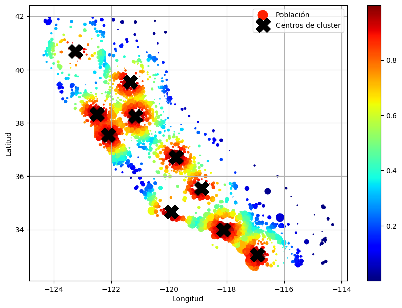
housing = strat_train_set.drop("median_house_value")Pipelines de transformación
Ahora construyamos un pipeline para preprocesar los atributos numéricos:
from sklearn.pipeline import Pipeline
num_pipeline = Pipeline(
[
("impute", SimpleImputer(strategy="median")),
("standardize", StandardScaler()),
]
)from sklearn.pipeline import make_pipeline
num_pipeline = make_pipeline(SimpleImputer(strategy="median"), StandardScaler())from sklearn import set_config
set_config(display="diagram")
num_pipelinePipeline(steps=[('simpleimputer', SimpleImputer(strategy='median')),
('standardscaler', StandardScaler())])In a Jupyter environment, please rerun this cell to show the HTML representation or trust the notebook. On GitHub, the HTML representation is unable to render, please try loading this page with nbviewer.org.
Parameters
Parameters
Parameters
housing_num_prepared = num_pipeline.fit_transform(housing_num)
housing_num_prepared[:2].round(2)array([[-1.33, 1.05, 0.99, -0.8 , -0.97, -0.96, -0.97, 2.36],
[-1.32, 1.04, -0.6 , 2.03, 1.35, 0.85, 1.67, 2.34]])df_housing_num_prepared = pl.DataFrame(
housing_num_prepared,
schema=list(num_pipeline.get_feature_names_out()),
)df_housing_num_prepared.head(2) # código extra
shape: (2, 8)
| longitude | latitude | housing_median_age | total_rooms | total_bedrooms | population | households | median_income |
|---|---|---|---|---|---|---|---|
| f64 | f64 | f64 | f64 | f64 | f64 | f64 | f64 |
| -1.327964 | 1.050099 | 0.98585 | -0.796827 | -0.965763 | -0.964302 | -0.973804 | 2.357306 |
| -1.322969 | 1.040734 | -0.604307 | 2.026566 | 1.35019 | 0.851473 | 1.670428 | 2.344717 |
num_pipeline.steps[('simpleimputer', SimpleImputer(strategy='median')),
('standardscaler', StandardScaler())]num_pipeline[1]StandardScaler()In a Jupyter environment, please rerun this cell to show the HTML representation or trust the notebook.
On GitHub, the HTML representation is unable to render, please try loading this page with nbviewer.org.
Parameters
num_pipeline[:-1]Pipeline(steps=[('simpleimputer', SimpleImputer(strategy='median'))])In a Jupyter environment, please rerun this cell to show the HTML representation or trust the notebook. On GitHub, the HTML representation is unable to render, please try loading this page with nbviewer.org.
Parameters
Parameters
num_pipeline.named_steps["simpleimputer"]SimpleImputer(strategy='median')In a Jupyter environment, please rerun this cell to show the HTML representation or trust the notebook.
On GitHub, the HTML representation is unable to render, please try loading this page with nbviewer.org.
Parameters
num_pipeline.set_params(simpleimputer__strategy="median")Pipeline(steps=[('simpleimputer', SimpleImputer(strategy='median')),
('standardscaler', StandardScaler())])In a Jupyter environment, please rerun this cell to show the HTML representation or trust the notebook. On GitHub, the HTML representation is unable to render, please try loading this page with nbviewer.org.
Parameters
Parameters
Parameters
from sklearn.compose import ColumnTransformer
num_attribs = [
"longitude",
"latitude",
"housing_median_age",
"total_rooms",
"total_bedrooms",
"population",
"households",
"median_income",
]
cat_attribs = ["ocean_proximity"]
cat_pipeline = make_pipeline(
SimpleImputer(strategy="most_frequent"), OneHotEncoder(handle_unknown="ignore")
)
preprocessing = ColumnTransformer(
[
("num", num_pipeline, num_attribs),
("cat", cat_pipeline, cat_attribs),
]
)from sklearn.compose import make_column_transformer
def numeric_columns(df):
return df.select(pl.selectors.numeric()).columns
def string_columns(df):
return df.select(pl.col(pl.String)).columns
preprocessing = make_column_transformer(
(num_pipeline, numeric_columns),
(cat_pipeline, string_columns),
)housing_prepared = preprocessing.fit_transform(housing)# código extra – muestra que podemos obtener un DataFrame si queremos
housing_prepared_fr = pl.DataFrame(
housing_prepared,
schema=list(preprocessing.get_feature_names_out()),
)
housing_prepared_fr.head(2)
shape: (2, 13)
| pipeline-1__longitude | pipeline-1__latitude | pipeline-1__housing_median_age | pipeline-1__total_rooms | pipeline-1__total_bedrooms | pipeline-1__population | pipeline-1__households | pipeline-1__median_income | pipeline-2__ocean_proximity_<1H OCEAN | pipeline-2__ocean_proximity_INLAND | pipeline-2__ocean_proximity_ISLAND | pipeline-2__ocean_proximity_NEAR BAY | pipeline-2__ocean_proximity_NEAR OCEAN |
|---|---|---|---|---|---|---|---|---|---|---|---|---|
| f64 | f64 | f64 | f64 | f64 | f64 | f64 | f64 | f64 | f64 | f64 | f64 | f64 |
| -1.327964 | 1.050099 | 0.98585 | -0.796827 | -0.965763 | -0.964302 | -0.973804 | 2.357306 | 0.0 | 0.0 | 0.0 | 1.0 | 0.0 |
| -1.322969 | 1.040734 | -0.604307 | 2.026566 | 1.35019 | 0.851473 | 1.670428 | 2.344717 | 0.0 | 0.0 | 0.0 | 1.0 | 0.0 |
def column_ratio(X):
return X[:, [0]] / X[:, [1]]
def ratio_name(function_transformer, feature_names_in):
return ["ratio"] # nombres de atributos de salida
def ratio_pipeline():
return make_pipeline(
SimpleImputer(strategy="median"),
FunctionTransformer(column_ratio, feature_names_out=ratio_name),
StandardScaler(),
)
log_pipeline = make_pipeline(
SimpleImputer(strategy="median"),
FunctionTransformer(np.log, feature_names_out="one-to-one"),
StandardScaler(),
)
cluster_simil = ClusterSimilarity(n_clusters=10, gamma=1.0, random_state=42)
default_num_pipeline = make_pipeline(SimpleImputer(strategy="median"), StandardScaler())
preprocessing = ColumnTransformer(
[
("bedrooms", ratio_pipeline(), ["total_bedrooms", "total_rooms"]),
("rooms_per_house", ratio_pipeline(), ["total_rooms", "households"]),
("people_per_house", ratio_pipeline(), ["population", "households"]),
(
"log",
log_pipeline,
[
"total_bedrooms",
"total_rooms",
"population",
"households",
"median_income",
],
),
("geo", cluster_simil, ["latitude", "longitude"]),
("cat", cat_pipeline, string_columns),
],
remainder=default_num_pipeline,
) # queda una columna: housing_median_agehousing_prepared = preprocessing.fit_transform(housing)
housing_prepared.shape(16512, 24)preprocessing.get_feature_names_out()array(['bedrooms__ratio', 'rooms_per_house__ratio',
'people_per_house__ratio', 'log__total_bedrooms',
'log__total_rooms', 'log__population', 'log__households',
'log__median_income', 'geo__Similitud con cluster 0',
'geo__Similitud con cluster 1', 'geo__Similitud con cluster 2',
'geo__Similitud con cluster 3', 'geo__Similitud con cluster 4',
'geo__Similitud con cluster 5', 'geo__Similitud con cluster 6',
'geo__Similitud con cluster 7', 'geo__Similitud con cluster 8',
'geo__Similitud con cluster 9', 'cat__ocean_proximity_<1H OCEAN',
'cat__ocean_proximity_INLAND', 'cat__ocean_proximity_ISLAND',
'cat__ocean_proximity_NEAR BAY', 'cat__ocean_proximity_NEAR OCEAN',
'remainder__housing_median_age'], dtype=object)Seleccionar y entrenar un modelo
Entrenar y evaluar sobre el conjunto de entrenamiento
from sklearn.linear_model import LinearRegression
lin_reg = make_pipeline(preprocessing, LinearRegression())
lin_reg.fit(housing, housing_labels.to_numpy())Pipeline(steps=[('columntransformer',
ColumnTransformer(remainder=Pipeline(steps=[('simpleimputer',
SimpleImputer(strategy='median')),
('standardscaler',
StandardScaler())]),
transformers=[('bedrooms',
Pipeline(steps=[('simpleimputer',
SimpleImputer(strategy='median')),
('functiontransformer',
FunctionTransformer(feature_names_out=<function ratio_name at 0x78f...
'total_rooms', 'population',
'households',
'median_income']),
('geo',
ClusterSimilarity(random_state=42),
['latitude', 'longitude']),
('cat',
Pipeline(steps=[('simpleimputer',
SimpleImputer(strategy='most_frequent')),
('onehotencoder',
OneHotEncoder(handle_unknown='ignore'))]),
<function string_columns at 0x78f1e8cb96c0>)])),
('linearregression', LinearRegression())])In a Jupyter environment, please rerun this cell to show the HTML representation or trust the notebook. On GitHub, the HTML representation is unable to render, please try loading this page with nbviewer.org.
Parameters
Parameters
['total_bedrooms', 'total_rooms']
Parameters
Parameters
Parameters
['total_rooms', 'households']
Parameters
Parameters
Parameters
['population', 'households']
Parameters
Parameters
Parameters
['total_bedrooms', 'total_rooms', 'population', 'households', 'median_income']
Parameters
Parameters
Parameters
['latitude', 'longitude']
Parameters
| n_clusters | 10 | |
| gamma | 1.0 | |
| random_state | 42 |
<function string_columns at 0x78f1e8cb96c0>
Parameters
Parameters
['housing_median_age']
Parameters
Parameters
Parameters
Probemos el pipeline completo de preprocessing sobre algunas instancias de entrenamiento:
housing_predictions = lin_reg.predict(housing)
housing_predictions[:5].round(-2) # -2 = redondeado al centenar más cercanoarray([367300., 374600., 359000., 319200., 292000.])Comparemos con los valores reales:
housing_labels.head(5).to_numpy()array([452600., 358500., 352100., 341300., 342200.])# código extra – calcula las razones de error discutidas en el libro
error_ratios = housing_predictions[:5].round(-2) / housing_labels.head(5).to_numpy() - 1
print(", ".join([f"{100 * ratio:.1f}%" for ratio in error_ratios]))-18.8%, 4.5%, 2.0%, -6.5%, -14.7%from sklearn.metrics import root_mean_squared_error
lin_rmse = root_mean_squared_error(housing_labels.to_numpy(), housing_predictions)
lin_rmse69628.72473814597from sklearn.tree import DecisionTreeRegressor
tree_reg = make_pipeline(preprocessing, DecisionTreeRegressor(random_state=42))
tree_reg.fit(housing, housing_labels.to_numpy())Pipeline(steps=[('columntransformer',
ColumnTransformer(remainder=Pipeline(steps=[('simpleimputer',
SimpleImputer(strategy='median')),
('standardscaler',
StandardScaler())]),
transformers=[('bedrooms',
Pipeline(steps=[('simpleimputer',
SimpleImputer(strategy='median')),
('functiontransformer',
FunctionTransformer(feature_names_out=<function ratio_name at 0x78f...
'households',
'median_income']),
('geo',
ClusterSimilarity(random_state=42),
['latitude', 'longitude']),
('cat',
Pipeline(steps=[('simpleimputer',
SimpleImputer(strategy='most_frequent')),
('onehotencoder',
OneHotEncoder(handle_unknown='ignore'))]),
<function string_columns at 0x78f1e8cb96c0>)])),
('decisiontreeregressor',
DecisionTreeRegressor(random_state=42))])In a Jupyter environment, please rerun this cell to show the HTML representation or trust the notebook. On GitHub, the HTML representation is unable to render, please try loading this page with nbviewer.org.
Parameters
Parameters
['total_bedrooms', 'total_rooms']
Parameters
Parameters
Parameters
['total_rooms', 'households']
Parameters
Parameters
Parameters
['population', 'households']
Parameters
Parameters
Parameters
['total_bedrooms', 'total_rooms', 'population', 'households', 'median_income']
Parameters
Parameters
Parameters
['latitude', 'longitude']
Parameters
| n_clusters | 10 | |
| gamma | 1.0 | |
| random_state | 42 |
<function string_columns at 0x78f1e8cb96c0>
Parameters
Parameters
['housing_median_age']
Parameters
Parameters
Parameters
housing_predictions = tree_reg.predict(housing)
tree_rmse = root_mean_squared_error(housing_labels.to_numpy(), housing_predictions)
tree_rmse0.0Mejor evaluación mediante cross-validation
from sklearn.model_selection import cross_val_score
tree_rmses = -cross_val_score(
tree_reg,
housing,
housing_labels.to_numpy(),
scoring="neg_root_mean_squared_error",
cv=10,
)pl.Series("tree_rmses", tree_rmses).describe()
shape: (9, 2)
| statistic | value |
|---|---|
| str | f64 |
| "count" | 10.0 |
| "null_count" | 0.0 |
| "mean" | 66503.04337 |
| "std" | 3049.595021 |
| "min" | 63208.146847 |
| "25%" | 64161.106398 |
| "50%" | 65851.915768 |
| "75%" | 69152.616327 |
| "max" | 71977.004064 |
# código extra – calcula las estadísticas de error para el modelo lineal
lin_rmses = -cross_val_score(
lin_reg,
housing,
housing_labels.to_numpy(),
scoring="neg_root_mean_squared_error",
cv=10,
)
pl.Series("lin_rmses", lin_rmses).describe()
shape: (9, 2)
| statistic | value |
|---|---|
| str | f64 |
| "count" | 10.0 |
| "null_count" | 0.0 |
| "mean" | 70705.192866 |
| "std" | 4890.581493 |
| "min" | 66050.489442 |
| "25%" | 68065.090371 |
| "50%" | 70038.330666 |
| "75%" | 70411.493896 |
| "max" | 83156.970571 |
Advertencia: la siguiente celda puede tardar algunos minutos en ejecutarse:
from sklearn.ensemble import RandomForestRegressor
forest_reg = make_pipeline(preprocessing, RandomForestRegressor(random_state=42))
forest_rmses = -cross_val_score(
forest_reg,
housing,
housing_labels.to_numpy(),
scoring="neg_root_mean_squared_error",
cv=10,
)pl.Series("forest_rmses", forest_rmses).describe()
shape: (9, 2)
| statistic | value |
|---|---|
| str | f64 |
| "count" | 10.0 |
| "null_count" | 0.0 |
| "mean" | 47327.917283 |
| "std" | 2120.353226 |
| "min" | 44296.059343 |
| "25%" | 45157.740907 |
| "50%" | 47659.703366 |
| "75%" | 48574.14477 |
| "max" | 51156.913725 |
Comparemos este RMSE medido con cross-validation (el “error de validación”) con el RMSE medido sobre el conjunto de entrenamiento (el “error de entrenamiento”):
forest_reg.fit(housing, housing_labels.to_numpy())
housing_predictions = forest_reg.predict(housing)
forest_rmse = root_mean_squared_error(housing_labels.to_numpy(), housing_predictions)
forest_rmse17544.565814894762El error de entrenamiento es mucho más bajo que el error de validación, lo que normalmente significa que el modelo hizo overfitting sobre el conjunto de entrenamiento. Otra posible explicación sería que existe un desajuste entre los datos de entrenamiento y los de validación, pero no es el caso aquí, ya que ambos provienen del mismo dataset que mezclamos y dividimos en dos partes.
Ajustar finamente el modelo
Grid search
Advertencia: la siguiente celda puede tardar algunos minutos en ejecutarse:
from sklearn.model_selection import GridSearchCV
full_pipeline = Pipeline(
[
("preprocessing", preprocessing),
("random_forest", RandomForestRegressor(random_state=42)),
]
)
param_grid = [
{
"preprocessing__geo__n_clusters": [5, 8, 10],
"random_forest__max_features": [4, 6, 8],
},
{
"preprocessing__geo__n_clusters": [10, 15],
"random_forest__max_features": [6, 8, 10],
},
]
grid_search = GridSearchCV(
full_pipeline, param_grid, cv=3, scoring="neg_root_mean_squared_error"
)
grid_search.fit(housing, housing_labels.to_numpy())GridSearchCV(cv=3,
estimator=Pipeline(steps=[('preprocessing',
ColumnTransformer(remainder=Pipeline(steps=[('simpleimputer',
SimpleImputer(strategy='median')),
('standardscaler',
StandardScaler())]),
transformers=[('bedrooms',
Pipeline(steps=[('simpleimputer',
SimpleImputer(strategy='median')),
('functiontransformer',
FunctionTransformer(feature_names_out=<f...
OneHotEncoder(handle_unknown='ignore'))]),
<function string_columns at 0x78f1e8cb96c0>)])),
('random_forest',
RandomForestRegressor(random_state=42))]),
param_grid=[{'preprocessing__geo__n_clusters': [5, 8, 10],
'random_forest__max_features': [4, 6, 8]},
{'preprocessing__geo__n_clusters': [10, 15],
'random_forest__max_features': [6, 8, 10]}],
scoring='neg_root_mean_squared_error')In a Jupyter environment, please rerun this cell to show the HTML representation or trust the notebook. On GitHub, the HTML representation is unable to render, please try loading this page with nbviewer.org.
Parameters
Parameters
['total_bedrooms', 'total_rooms']
Parameters
Parameters
Parameters
['total_rooms', 'households']
Parameters
Parameters
Parameters
['population', 'households']
Parameters
Parameters
Parameters
['total_bedrooms', 'total_rooms', 'population', 'households', 'median_income']
Parameters
Parameters
Parameters
['latitude', 'longitude']
Parameters
| n_clusters | 15 | |
| gamma | 1.0 | |
| random_state | 42 |
<function string_columns at 0x78f1e8cb96c0>
Parameters
Parameters
['housing_median_age']
Parameters
Parameters
Parameters
Puede obtener la lista completa de hiperparámetros disponibles para ajustar consultando full_pipeline.get_params().keys():
# código extra – muestra parte de la salida de get_params().keys()
print(str(full_pipeline.get_params().keys())[:1000] + "...")dict_keys(['memory', 'steps', 'transform_input', 'verbose', 'preprocessing', 'random_forest', 'preprocessing__force_int_remainder_cols', 'preprocessing__n_jobs', 'preprocessing__remainder__memory', 'preprocessing__remainder__steps', 'preprocessing__remainder__transform_input', 'preprocessing__remainder__verbose', 'preprocessing__remainder__simpleimputer', 'preprocessing__remainder__standardscaler', 'preprocessing__remainder__simpleimputer__add_indicator', 'preprocessing__remainder__simpleimputer__copy', 'preprocessing__remainder__simpleimputer__fill_value', 'preprocessing__remainder__simpleimputer__keep_empty_features', 'preprocessing__remainder__simpleimputer__missing_values', 'preprocessing__remainder__simpleimputer__strategy', 'preprocessing__remainder__standardscaler__copy', 'preprocessing__remainder__standardscaler__with_mean', 'preprocessing__remainder__standardscaler__with_std', 'preprocessing__remainder', 'preprocessing__sparse_threshold', 'preprocessing__transformer_weights', ...La mejor combinación de hiperparámetros encontrada:
grid_search.best_params_{'preprocessing__geo__n_clusters': 15, 'random_forest__max_features': 6}grid_search.best_estimator_Pipeline(steps=[('preprocessing',
ColumnTransformer(remainder=Pipeline(steps=[('simpleimputer',
SimpleImputer(strategy='median')),
('standardscaler',
StandardScaler())]),
transformers=[('bedrooms',
Pipeline(steps=[('simpleimputer',
SimpleImputer(strategy='median')),
('functiontransformer',
FunctionTransformer(feature_names_out=<function ratio_name at 0x78f1e63...
'median_income']),
('geo',
ClusterSimilarity(n_clusters=15,
random_state=42),
['latitude', 'longitude']),
('cat',
Pipeline(steps=[('simpleimputer',
SimpleImputer(strategy='most_frequent')),
('onehotencoder',
OneHotEncoder(handle_unknown='ignore'))]),
<function string_columns at 0x78f1e8cb96c0>)])),
('random_forest',
RandomForestRegressor(max_features=6, random_state=42))])In a Jupyter environment, please rerun this cell to show the HTML representation or trust the notebook. On GitHub, the HTML representation is unable to render, please try loading this page with nbviewer.org.
Parameters
Parameters
['total_bedrooms', 'total_rooms']
Parameters
Parameters
Parameters
['total_rooms', 'households']
Parameters
Parameters
Parameters
['population', 'households']
Parameters
Parameters
Parameters
['total_bedrooms', 'total_rooms', 'population', 'households', 'median_income']
Parameters
Parameters
Parameters
['latitude', 'longitude']
Parameters
| n_clusters | 15 | |
| gamma | 1.0 | |
| random_state | 42 |
<function string_columns at 0x78f1e8cb96c0>
Parameters
Parameters
['housing_median_age']
Parameters
Parameters
Parameters
Veamos la puntuación de cada combinación de hiperparámetros probada durante el grid search:
cv_res = pl.DataFrame(grid_search.cv_results_).sort("mean_test_score", descending=True)
# código extra – estas líneas solo hacen que el DataFrame se vea mejor
cv_res = cv_res.select(
[
"param_preprocessing__geo__n_clusters",
"param_random_forest__max_features",
"split0_test_score",
"split1_test_score",
"split2_test_score",
"mean_test_score",
]
)
score_cols = ["split0", "split1", "split2", "mean_test_rmse"]
cv_res.columns = ["n_clusters", "max_features"] + score_cols
cv_res = cv_res.with_columns(
[(-pl.col(col)).round(0).cast(pl.Int64).alias(col) for col in score_cols]
)
cv_res.head()
shape: (5, 6)
| n_clusters | max_features | split0 | split1 | split2 | mean_test_rmse |
|---|---|---|---|---|---|
| i64 | i64 | i64 | i64 | i64 | i64 |
| 15 | 6 | 46245 | 43926 | 42404 | 44192 |
| 15 | 8 | 46333 | 44255 | 43159 | 44582 |
| 15 | 10 | 46697 | 44813 | 43652 | 45054 |
| 10 | 6 | 47320 | 45026 | 43774 | 45374 |
| 10 | 6 | 47320 | 45026 | 43774 | 45374 |
Randomized search
from sklearn.experimental import enable_halving_search_cv
from sklearn.model_selection import HalvingRandomSearchCVProbar 30 combinaciones aleatorias de hiperparámetros (n_iter × cv):
Advertencia: la siguiente celda puede tardar algunos minutos en ejecutarse:
from sklearn.model_selection import RandomizedSearchCV
from scipy.stats import randint
param_distribs = {
"preprocessing__geo__n_clusters": randint(low=3, high=50),
"random_forest__max_features": randint(low=2, high=20),
}
rnd_search = RandomizedSearchCV(
full_pipeline,
param_distributions=param_distribs,
n_iter=10,
cv=3,
scoring="neg_root_mean_squared_error",
random_state=42,
)
rnd_search.fit(housing, housing_labels.to_numpy())RandomizedSearchCV(cv=3,
estimator=Pipeline(steps=[('preprocessing',
ColumnTransformer(remainder=Pipeline(steps=[('simpleimputer',
SimpleImputer(strategy='median')),
('standardscaler',
StandardScaler())]),
transformers=[('bedrooms',
Pipeline(steps=[('simpleimputer',
SimpleImputer(strategy='median')),
('functiontransformer',
FunctionTransformer(feature_names_...
('random_forest',
RandomForestRegressor(random_state=42))]),
param_distributions={'preprocessing__geo__n_clusters': <scipy.stats._distn_infrastructure.rv_discrete_frozen object at 0x78f32449f230>,
'random_forest__max_features': <scipy.stats._distn_infrastructure.rv_discrete_frozen object at 0x78f1e0930f50>},
random_state=42, scoring='neg_root_mean_squared_error')In a Jupyter environment, please rerun this cell to show the HTML representation or trust the notebook. On GitHub, the HTML representation is unable to render, please try loading this page with nbviewer.org.
Parameters
Parameters
['total_bedrooms', 'total_rooms']
Parameters
Parameters
Parameters
['total_rooms', 'households']
Parameters
Parameters
Parameters
['population', 'households']
Parameters
Parameters
Parameters
['total_bedrooms', 'total_rooms', 'population', 'households', 'median_income']
Parameters
Parameters
Parameters
['latitude', 'longitude']
Parameters
| n_clusters | 45 | |
| gamma | 1.0 | |
| random_state | 42 |
<function string_columns at 0x78f1e8cb96c0>
Parameters
Parameters
['housing_median_age']
Parameters
Parameters
Parameters
# código extra – muestra los resultados del randomized search
cv_res = pl.DataFrame(rnd_search.cv_results_).sort("mean_test_score", descending=True)
cv_res = cv_res.select(
[
"param_preprocessing__geo__n_clusters",
"param_random_forest__max_features",
"split0_test_score",
"split1_test_score",
"split2_test_score",
"mean_test_score",
]
)
cv_res.columns = ["n_clusters", "max_features"] + score_cols
cv_res = cv_res.with_columns(
[(-pl.col(col)).round(0).cast(pl.Int64).alias(col) for col in score_cols]
)
cv_res.head()
shape: (5, 6)
| n_clusters | max_features | split0 | split1 | split2 | mean_test_rmse |
|---|---|---|---|---|---|
| i64 | i64 | i64 | i64 | i64 | i64 |
| 45 | 9 | 44595 | 42167 | 41261 | 42675 |
| 32 | 7 | 44561 | 42348 | 41527 | 42812 |
| 41 | 16 | 45101 | 43004 | 41610 | 43238 |
| 42 | 4 | 45306 | 42570 | 41897 | 43258 |
| 23 | 8 | 45531 | 43090 | 41901 | 43507 |
Analizar los mejores modelos y sus errores
final_model = rnd_search.best_estimator_ # incluye preprocessing
feature_importances = final_model["random_forest"].feature_importances_
feature_importances.round(2)array([0.07, 0.06, 0.05, 0.01, 0.01, 0.01, 0.01, 0.18, 0.01, 0.01, 0.02,
0.01, 0. , 0.01, 0.01, 0.02, 0.01, 0.01, 0.01, 0.02, 0.01, 0.01,
0.01, 0.02, 0. , 0.02, 0.01, 0.01, 0.01, 0.01, 0.02, 0.01, 0.01,
0.01, 0.01, 0.01, 0. , 0.02, 0.02, 0.02, 0.01, 0.01, 0.01, 0.01,
0.01, 0.01, 0.01, 0.01, 0.04, 0.01, 0.01, 0.01, 0.01, 0. , 0.07,
0. , 0. , 0. , 0.01])sorted(
zip(feature_importances, final_model["preprocessing"].get_feature_names_out()),
reverse=True,
)[(np.float64(0.17880238131149134), 'log__median_income'),
(np.float64(0.07381749533772475), 'bedrooms__ratio'),
(np.float64(0.07267469411184849), 'cat__ocean_proximity_INLAND'),
(np.float64(0.05698858473027031), 'rooms_per_house__ratio'),
(np.float64(0.05089874665251742), 'people_per_house__ratio'),
(np.float64(0.0376693387226664), 'geo__Similitud con cluster 40'),
(np.float64(0.02415140988126297), 'geo__Similitud con cluster 29'),
(np.float64(0.023056013193885165), 'geo__Similitud con cluster 17'),
(np.float64(0.022163413185462433), 'geo__Similitud con cluster 2'),
(np.float64(0.022162257131750136), 'geo__Similitud con cluster 7'),
(np.float64(0.02042285785093997), 'geo__Similitud con cluster 15'),
(np.float64(0.01796973985448446), 'geo__Similitud con cluster 11'),
(np.float64(0.01644197852121045), 'geo__Similitud con cluster 22'),
(np.float64(0.015231042485248592), 'geo__Similitud con cluster 31'),
(np.float64(0.015208213770897637), 'geo__Similitud con cluster 30'),
(np.float64(0.013601365168233286), 'geo__Similitud con cluster 36'),
(np.float64(0.012879673633151505), 'geo__Similitud con cluster 18'),
(np.float64(0.012544752224037418), 'geo__Similitud con cluster 38'),
(np.float64(0.011648403572444874), 'geo__Similitud con cluster 14'),
(np.float64(0.01126425636603314), 'remainder__housing_median_age'),
(np.float64(0.011091768428009605), 'geo__Similitud con cluster 6'),
(np.float64(0.010971499944283033), 'geo__Similitud con cluster 1'),
(np.float64(0.010863042452808511), 'geo__Similitud con cluster 9'),
(np.float64(0.010836507704732443), 'geo__Similitud con cluster 33'),
(np.float64(0.010789603511453758), 'geo__Similitud con cluster 34'),
(np.float64(0.010704393421761363), 'geo__Similitud con cluster 10'),
(np.float64(0.010347789523146514), 'geo__Similitud con cluster 19'),
(np.float64(0.010216904531612496), 'geo__Similitud con cluster 42'),
(np.float64(0.010106353398536744), 'geo__Similitud con cluster 37'),
(np.float64(0.0099007536351829), 'geo__Similitud con cluster 32'),
(np.float64(0.009890071197534054), 'geo__Similitud con cluster 3'),
(np.float64(0.009868129642864957), 'geo__Similitud con cluster 44'),
(np.float64(0.009784488666806557), 'geo__Similitud con cluster 41'),
(np.float64(0.009719992470298493), 'geo__Similitud con cluster 20'),
(np.float64(0.009428016103346556), 'geo__Similitud con cluster 13'),
(np.float64(0.008820080231971164), 'geo__Similitud con cluster 24'),
(np.float64(0.008411986746413521), 'geo__Similitud con cluster 23'),
(np.float64(0.008074982510801153), 'geo__Similitud con cluster 35'),
(np.float64(0.008004412241008393), 'geo__Similitud con cluster 25'),
(np.float64(0.0074611952172112155), 'log__total_rooms'),
(np.float64(0.0074070095997275836), 'log__population'),
(np.float64(0.006946890788603158), 'log__total_bedrooms'),
(np.float64(0.006904926382982712), 'geo__Similitud con cluster 8'),
(np.float64(0.006852851910228645), 'geo__Similitud con cluster 0'),
(np.float64(0.006696610040971746), 'geo__Similitud con cluster 43'),
(np.float64(0.006663835056774162), 'log__households'),
(np.float64(0.006649407509438607), 'geo__Similitud con cluster 27'),
(np.float64(0.006640489911985824), 'geo__Similitud con cluster 12'),
(np.float64(0.006396353239977865), 'geo__Similitud con cluster 5'),
(np.float64(0.006388870363523759), 'geo__Similitud con cluster 21'),
(np.float64(0.0055500385351580145), 'geo__Similitud con cluster 26'),
(np.float64(0.005054627721788298), 'geo__Similitud con cluster 39'),
(np.float64(0.00470777883759686), 'geo__Similitud con cluster 16'),
(np.float64(0.004343426620638807), 'geo__Similitud con cluster 28'),
(np.float64(0.002961318447265596), 'cat__ocean_proximity_<1H OCEAN'),
(np.float64(0.002479170582746683), 'cat__ocean_proximity_NEAR OCEAN'),
(np.float64(0.0020286683388693583), 'geo__Similitud con cluster 4'),
(np.float64(0.0003880798895669554), 'cat__ocean_proximity_NEAR BAY'),
(np.float64(5.105693681134237e-05), 'cat__ocean_proximity_ISLAND')]Evaluar el sistema en el conjunto de prueba
X_test = strat_test_set.drop("median_house_value")
y_test = strat_test_set["median_house_value"]
final_predictions = final_model.predict(X_test)
final_rmse = root_mean_squared_error(y_test.to_numpy(), final_predictions)
print(final_rmse)40623.466919823426Podemos calcular un intervalo de confianza del 95% para el RMSE de prueba usando la función bootstrap() de SciPy:
from scipy.stats import bootstrap
def rmse(squared_errors):
return np.sqrt(np.mean(squared_errors))
confidence = 0.95
squared_errors = (final_predictions - y_test.to_numpy()) ** 2
boot_result = bootstrap(
[squared_errors], rmse, confidence_level=confidence, random_state=42
)
rmse_lower, rmse_upper = boot_result.confidence_intervalprint(f"IC del 95% para el RMSE: ({rmse_lower:.4f}, {rmse_upper:.4f})")IC del 95% para el RMSE: (38814.7962, 42771.7059)Persistencia del modelo con joblib
Guardar el modelo final:
# import joblib
# joblib.dump(final_model, "my_california_housing_model.pkl")Ahora puede desplegar este modelo en producción. Por ejemplo, el siguiente código podría ser un script que corra en producción:
# import joblib
# final_model_reloaded = joblib.load("my_california_housing_model.pkl")
# new_data = housing.head(5) # supongamos que estos son distritos nuevos
# predictions = final_model_reloaded.predict(new_data)# predictionsPodría usar pickle en su lugar, pero joblib es más eficiente.